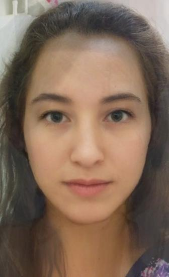

The purpose of this project was to introduce the class to the concepts behind image morphing. A morph is a simultaneous warp of the image shapes, as defined by a set of corresponding points, and a cross-dissolve of the image colors.
In this project, we first compute the average face (not average of the faces) between two portraits. Next, we create animated illustrations of smooth transitions from one face to another.
We then take what we learned from this and use it to solve a big data problem: Given a set of faces, what does the population mean look like? From this average face, we exemplify the difference between any individual and the mean. Lastly, we extrapolate from the population mean to create caricatures of faces.
Introduction
Algorithm
The reason why we need to warp the images in order to morph them is because we cannot assume that the shapes of the images are equivalent to one another. Instead, the convention is to match their features (i.e., nose to nose, eyes to eyes, etc) and use this information to compute local warps.
The image features are matched to one another by defining a set of corresponding points at the key feature points on the two images.
In my project, I used 50 points or more because, generally speaking, the more points you have, the better the morph.
The next step is to compute a triangulation of these points that is consistent in both images.
In my case, I chose to compute a Delaunay triangulation on the intermediate shape between the images, as was suggested in the project instructions. The average shape is computed by multiplying each set of points by 1/(number of images) and then adding them together. This triangulation is desirable for two reasons: first, it tends to avoid skinny triangles, which often are non-local and second, it does not favor one image shape over the other because it is taken from the average of the two shapes.
The following step, is to warp each triangle in both images into the desired shape. Since these pictures are independent of one another, I warp each image in parallel to get a bit of a speedup.
In order to warp these triangles into the desired shape, I do the following: create a list of the triangles each pixel belongs to; compute the affine transformation matrix by dividing the triangle coordinates in the image by the triangle coordinates in the warped image; create a map of the indices where the pixels in the warped image must be taken from the original image; since some of these values are likely to fall between several pixels, I interpolate the values of the pixels from in the original image as indicated by the pixel map to assign all pixel values in the final warped image (the pixel map that I created lets me do this all at once, but it must be done for each color channel separately).
Finally, the colors of the two images are computed with a weighted linear interpolation. This technique is referred to as a "cross-dissolve" between the two images.
The image features are matched to one another by defining a set of corresponding points at the key feature points on the two images.
In my project, I used 50 points or more because, generally speaking, the more points you have, the better the morph.
The next step is to compute a triangulation of these points that is consistent in both images.
In my case, I chose to compute a Delaunay triangulation on the intermediate shape between the images, as was suggested in the project instructions. The average shape is computed by multiplying each set of points by 1/(number of images) and then adding them together. This triangulation is desirable for two reasons: first, it tends to avoid skinny triangles, which often are non-local and second, it does not favor one image shape over the other because it is taken from the average of the two shapes.
The following step, is to warp each triangle in both images into the desired shape. Since these pictures are independent of one another, I warp each image in parallel to get a bit of a speedup.
In order to warp these triangles into the desired shape, I do the following: create a list of the triangles each pixel belongs to; compute the affine transformation matrix by dividing the triangle coordinates in the image by the triangle coordinates in the warped image; create a map of the indices where the pixels in the warped image must be taken from the original image; since some of these values are likely to fall between several pixels, I interpolate the values of the pixels from in the original image as indicated by the pixel map to assign all pixel values in the final warped image (the pixel map that I created lets me do this all at once, but it must be done for each color channel separately).
Finally, the colors of the two images are computed with a weighted linear interpolation. This technique is referred to as a "cross-dissolve" between the two images.
Midway Face
Before we computed a morph between two images, we were asked to compute the midway face between two images.
I first computed the average shape (as described above), warped both images into that shape, and finally cross-dissolved the colors.
I chose these famous portraits by Steve McCurry because most of the features remain the same due to the fact that it is the same person over time. The vast majority of the points I selected were on the face for this reason (as you can see in the images that include the triangulations). This allows for a smooth transition between the faces.
The head scarves, on the other hand, do not transition as smoothly because these do not span a linear subspace. The position of the headscarf is too different on both faces to allow for a suave transition between these.
Afghan Girl
Original (1984)
by Steve McCurry
Afghan Girl
Triangulated
Afghan Girl Revealed
Original (2002)
by Steve McCurry
Afghan Girl Revealed
Triangulated
Midway Afghan Girl
Midway Afghan Girl
Triangualted
Morph Sequence
The morph sequence consists of 45 frames, each of which is shown for 1/30 of a second in the animated GIF. The GIF contains the morph forward and backwards, because this seemed to be the most appropriate way to display the sequence.
They key to the morphing sequence are the weights that control both the warp and the dissolve fractions. The warp fraction dictates hoe much each image contributes to the shape that the images will be warped to, and the dissolve fraction determines the ratio of colors in the morphed frame.
These fractions determine how much of each image will be present in each frame, and they are the only values that change from frame to frame. They take on 45 equally spaced values from 0 to 1. The first image's weight corresponds to (1-(current weight)) and the second's is (current weight).
They key to the morphing sequence are the weights that control both the warp and the dissolve fractions. The warp fraction dictates hoe much each image contributes to the shape that the images will be warped to, and the dissolve fraction determines the ratio of colors in the morphed frame.
These fractions determine how much of each image will be present in each frame, and they are the only values that change from frame to frame. They take on 45 equally spaced values from 0 to 1. The first image's weight corresponds to (1-(current weight)) and the second's is (current weight).

Afghan Girl Morph
18 years in 1.5 seconds
Average Faces
Having a set of annotated images makes life easy! I used a database of Brazilian Faces made availabe by the Artificial Intelligence Laboratory of FEI in São Bernardo do Campo, São Paulo, Brazil. This database consists of 14 images of 200 individuals that are annotated manually for the same corresponding 46 points.
I added points corresponding to the 4 corners of every image so that I could make sure that every pixel was within a triangle.
I chose to work with the non-similing women in the population. Below are some examples of the images I used from the database.
I added points corresponding to the 4 corners of every image so that I could make sure that every pixel was within a triangle.
I chose to work with the non-similing women in the population. Below are some examples of the images I used from the database.

Annotated points shown in red
Annotated points shown in red
The process for computing the mean face of a population is threefold: first, compute the average shape of the population; second, warp each face into the average shape; last, cross-dissolve the warped faces to produce the average morphed image.
These are some faces warped to the average shape. Compare the first and third warped images to the original images directly above.
These are some faces warped to the average shape. Compare the first and third warped images to the original images directly above.
Warped to average shape
Warped to average shape
Warped to average shape
Warped to average shape
This is the result of cross-dissolving all warped images to get the population average.
Average Brazilian Woman
Given the average face, we can now compare individuals to the mean.
Below, I show my original face compared to it warped to the average geometry and the average face warped to my geometry.
Below, I show my original face compared to it warped to the average geometry and the average face warped to my geometry.
My face
My face warped to the average Brazilian woman geometry
Average Brazilian woman face warped to my geometry
Caricatures
In order to produce a caricature of my face I extrapolated from the mean by warping my face between my geometry and the average Brazilian woman's geometry using weights that are not in the range from 0 to 1.
Caricature sequence: morphing towards population mean
weights = [0,2]
weights = [0,2]
Caricature: morphing towards population mean
Caricature sequence: morphing away from population mean
weights = [-2,0]
weights = [-2,0]
Caricature: morphing away from population mean
Bells & Whistles I: Radical Makeover
I changed my ethnicity and gender by morphing my face's shape and appearance with those of average faces from the web.
Below are some fun examples.
My face
Average Japanese female actress
My appearance & Japanese female shape
Japanese female appearance & my shape

Midway image
My face
Average African-American female
My appearance & African-American female shape
African-American female appearance & my shape
Midway image
My face
Average Argentinian male
My appearance & Argentinian male shape
Argentinian male appearance & my shape
Midway image
Bells & Whistles II: Lauren's Hair
My friend Lauren loves to change the way her hair looks. Her profile pictures are waay more interesting than mine, so I chose to make a video of her through the years!
Here are the parts of it.


Conclusion
This project was really enjoyable for me. The most important thing that I learned was how powerful triangulations are: we couldn't have morphed this successfully without them!
Additionally, I found the population mean calculations interesting because it is an pragmatic way to take advantage of all the images that exist on the internet.
Additionally, I found the population mean calculations interesting because it is an pragmatic way to take advantage of all the images that exist on the internet.